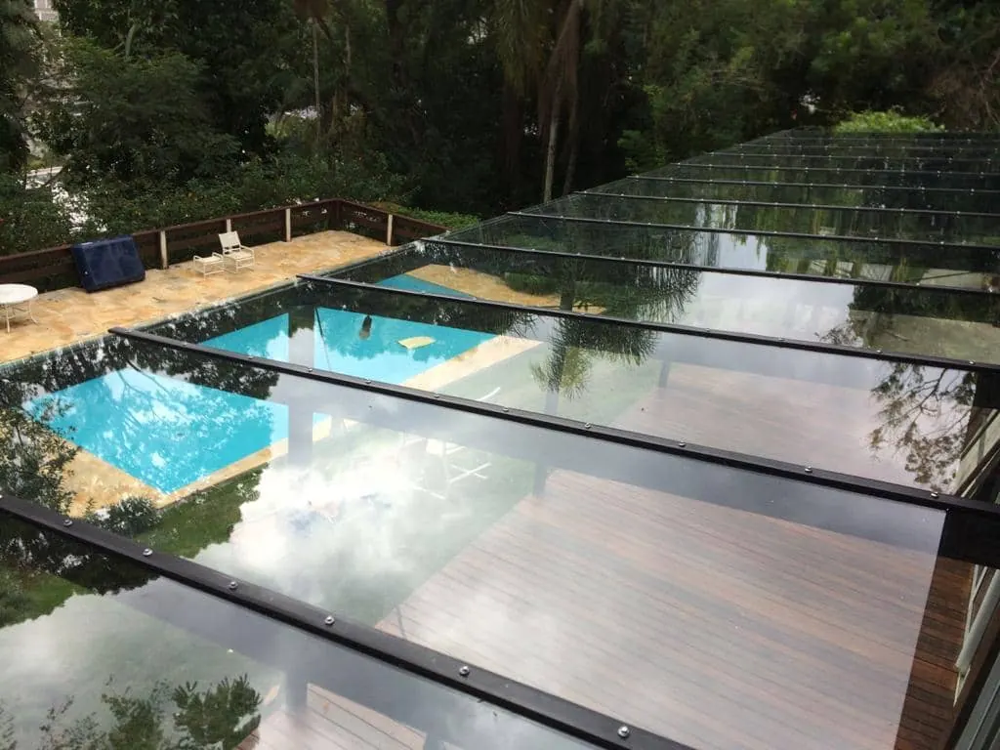

Serviços já executados
Fotos de trabalhos da Serralheria Melo. Veja por tipo de serviço.




Conte o que você precisa
O orçamento é sem compromisso. Fale com a equipe da Melo pelo WhatsApp ou pelo telefone.
- Endereço
- Rua Tenente Antônio João, 2333
Bom Retiro, Joinville, SC - Segunda a quinta
- 7h30 às 12h e 13h15 às 17h45
- Sexta-feira
- 7h30 às 12h e 13h15 às 16h30